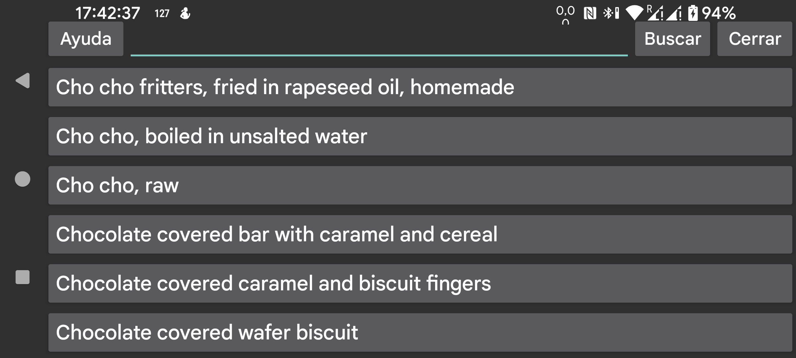

Aquí puedes buscar alimentos en McCance and Widdowson’s The Composition of Foods Integrated Dataset 2021:
https://www.gov.uk/government/publications/composition-of-foods-integrated-dataset-cofid
Puedes buscar usando expresiones regulares:
https://www.regular-expressions.info/quickstart.html
Por ejemplo, para buscar elementos que empiecen por apple y vayan seguidos de la palabra raw, puedes usar ^apple.*\braw\b.
Buscar apple devuelve todos los elementos que contienen apple.